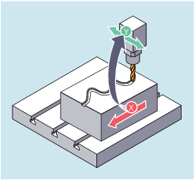

Bei der axialen Leitwertkopplung werden eine Leit- und eine Folgeachse synchron verfahren. Dabei ist die jeweilige Position der Folgeachse über eine Kurventabelle bzw. ein daraus berechnetes Polynom eindeutig einer - ggf. simulierten - Position der Leitachse zugeordnet.
Leitachse heißt diejenige Achse, die die Eingangswerte für die Kurventabelle liefert. Folgeachse heißt die Achse, die die über die Kurventabelle errechneten Positionen einnimmt.
Als Leitwerte, also Ausgangswerte zur Positionsermittlung der Folgeachse können verwendet werden:
Istwerte der Leitachsposition: Istwertkopplung
Sollwerte der Leitachsposition: Sollwertkopplung
Die Leitwertkopplung gilt immer im Basiskoordinatensystem.
Zur Erstellung von Kurventabellen siehe Kapitel "Kurventabellen".
Oder Ausschalten ohne Angabe der Leitachse:
LEADOF(<FAx>)Die Leitwertkopplung kann sowohl vom Teileprogramm als auch während der Bewegung aus Synchronaktionen heraus ein- und ausgeschaltet werden.
| Leitwertkopplung einschalten |
| Leitwertkopplung ausschalten |
| Folgeachse |
| Leitachse |
| Kurventabellen-Nummer |
| Umschaltung zwischen Soll- und Istwertkopplung |
Mit dem Ausschalten der Leitwertkopplung wird die Folgeachse wieder zur normalen Kommandoachse!
Abhängig von der Einstellung im Maschinendatum werden Leitwertkopplungen mit RESET ausgeschaltet.
Bei einer Pressenanlage soll eine herkömmliche mechanische Kopplung zwischen einer Leitachse (Stempel-Kurbelwelle) und Achsen eines Transfersystems aus Transferachsen und Hilfsachsen durch ein elektronisches Koppelsystem ersetzt werden.
Es demonstriert, wie bei einer Pressenanlage ein mechanisches Transfersystem durch ein elektronisches Transfersystem ersetzt wird. Die Kopplungs- und Entkopplungsvorgänge sind als statische Synchronaktionen realisiert.
Von der Leitachse LW (Stempelwelle) werden Transferachsen und Hilfsachsen als Folgeachsen über Kurventabellen definiert gesteuert.
X Vorschub- bzw. Längsachse
YL Schließ- bzw. Querachse
ZL Hubachse
U Walzenvorschub, Hilfsachse
V Richtkopf, Hilfsachse
W Befettung, Hilfsachse
Als Aktionen treten in den Synchronaktionen z. B. auf:
Einkoppeln: LEADON(<FAx>,<LAx>,<CurveTabNr>)
Auskoppeln: LEADOF(<FAx>,<LAx>)
Istwertsetzen: PRESETON(<Ax>,<Value>)
Merker setzen: $AC_MARKER[i]=<Value>
Kopplungsart: reeller/virtueller Leitwert
Anfahren von Achspositionen: POS[<Ax>]=<Value>
Bedingungen
Als Bedingungen werden digitale schnelle Eingänge, Echtzeitvariablen $AC_MARKER und Positionsvergleiche, mit dem logischen Operator AND verknüpft, ausgewertet.
| Hinweis |
Im folgenden Beispiel wurden Zeilenwechsel, Einrückungen und Fettsatz ausschließlich dafür verwendet, die Lesbarkeit der Programmierung zu erhöhen. Für die Steuerung ist alles unter einer Zeilennummer stehende einzeilig. |
| Programmcode | Kommentar |
|---|---|
| ; Definiert sämtliche statische Synchronaktionen. | |
| ; ****Marker rücksetzen | |
| N2 $AC_MARKER[0]=0 $AC_MARKER[1]=0 $AC_MARKER[2]=0 $AC_MARKER[3]=0 $AC_MARKER[4]=0 $AC_MARKER[5]=0 $AC_MARKER[6]=0 $AC_MARKER[7]=0 | |
| ; **** E1 0=>1 Kopplung Transfer EIN | |
| N10 IDS=1 EVERY ($A_IN[1]==1) AND ($A_IN[16]==1) AND ($AC_MARKER[0]==0) DO LEADON(X,LW,1) LEADON(YL,LW,2) LEADON(ZL,LW,3) $AC_MARKER[0]=1 | |
| ; **** E1 0=>1 Kopplung Walzenvorschub EIN | |
| N20 IDS=11 EVERY ($A_IN[1]==1) AND ($A_IN[5]==0) AND ($AC_MARKER[5]==0) DO LEADON(U,LW,4) PRESETON(U,0) $AC_MARKER[5]=1 | |
| ; **** E1 0->1 Kopplung Richtkopf EIN | |
| N21 IDS=12 EVERY ($A_IN[1]==1) AND ($A_IN[5]==0) AND ($AC_MARKER[6]==0) DO LEADON(V,LW,4) PRESETON(V,0) $AC_MARKER[6]=1 | |
| ; **** E1 0->1 Kopplung Befettung EIN | |
| N22 IDS=13 EVERY ($A_IN[1]==1) AND ($A_IN[5]==0) AND ($AC_MARKER[7]==0) DO LEADON(W,LW,4) PRESETON(W,0) $AC_MARKER[7]=1 | |
| ; **** E2 0=>1 Kopplung AUS | |
| N30 IDS=3 EVERY ($A_IN[2]==1) DO LEADOF(X,LW) LEADOF(YL,LW) LEADOF(ZL,LW) LEADOF(U,LW) LEADOF(V,LW) LEADOF(W,LW) $AC_MARKER[0]=0 $AC_MARKER[1]=0 $AC_MARKER[3]=0 $AC_MARKER[4]=0 $AC_MARKER[5]=0 $AC_MARKER[6]=0 $AC_MARKER[7]=0 | |
| .... | |
| N110 G04 F01 | |
| N120 M30 | |
Siehe auch:
Axiale Leitwertkopplung (LEADON, LEADOF): Weitere Informationen